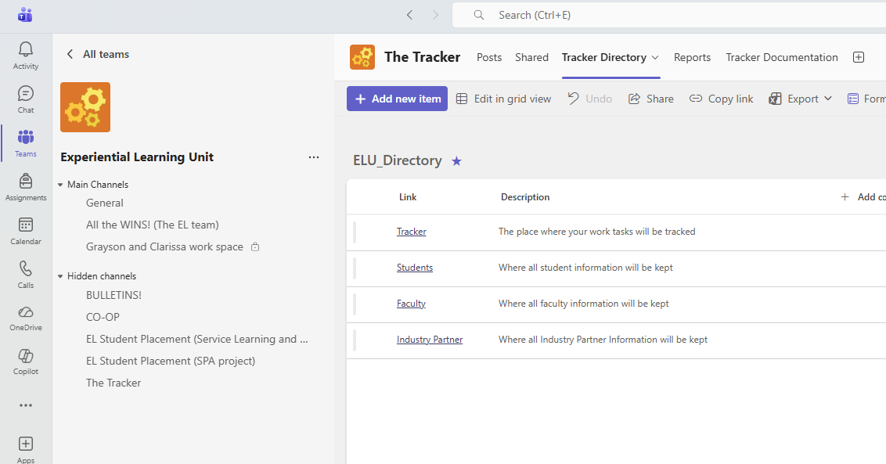
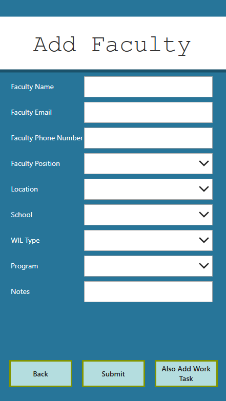
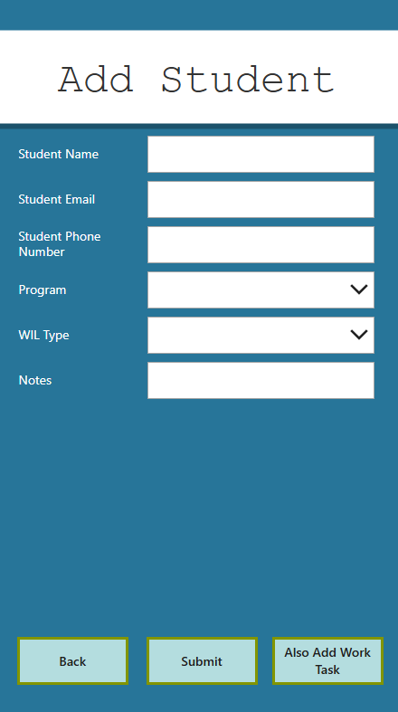
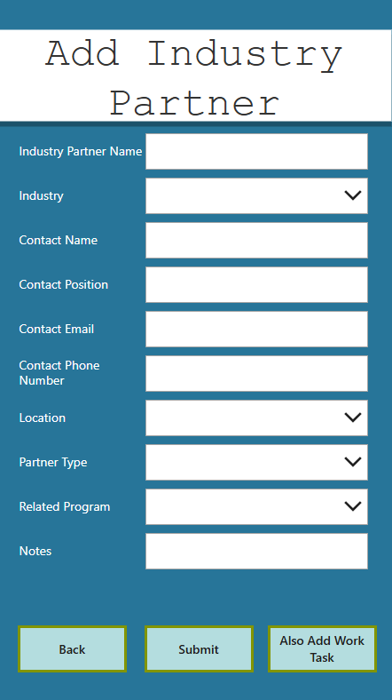
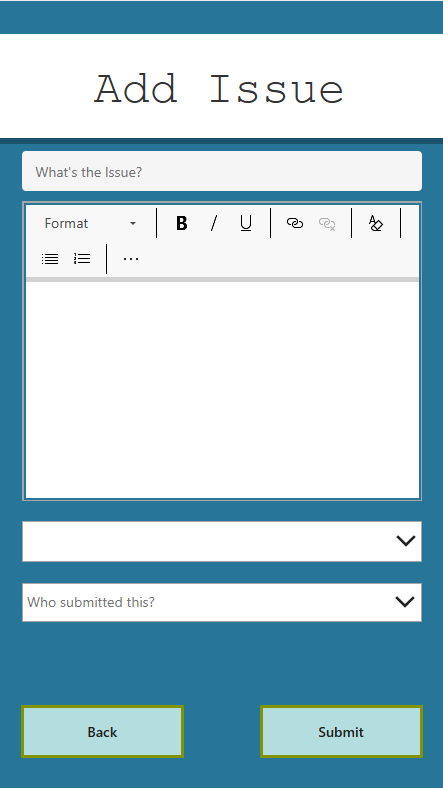
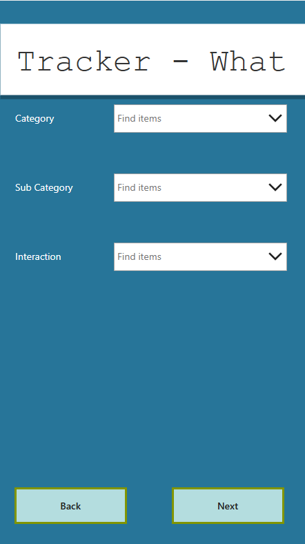
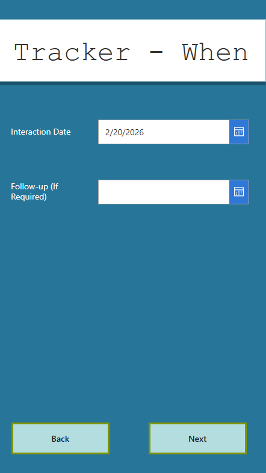
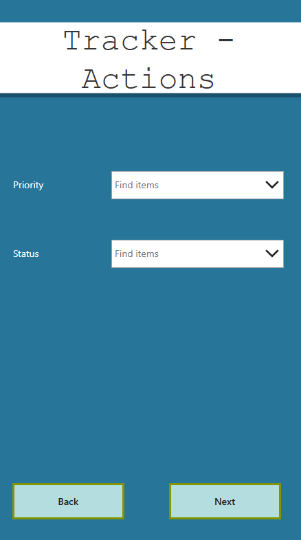
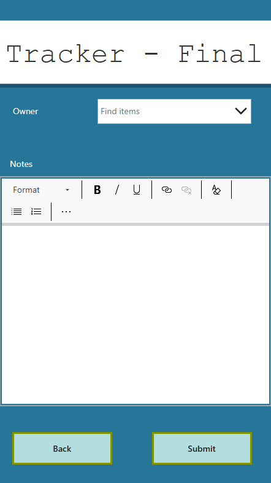
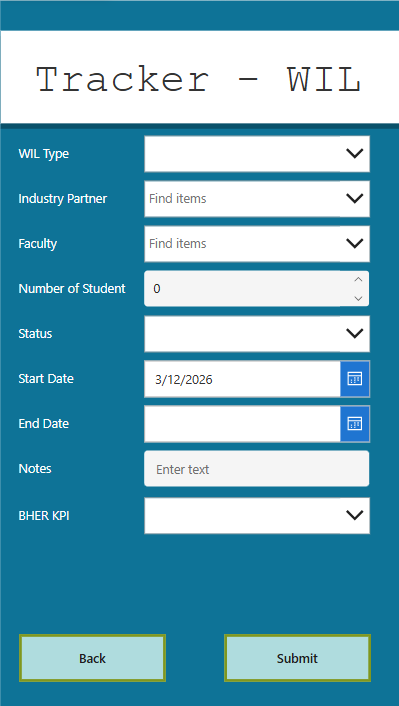

Tracker Guidance
This Guidance page provides a clear, step-by-step reference for using the Tracker effectively. Whether you're entering new contacts or managing ongoing work, each section walks you through the essential tasks you’ll perform in the system. Inside, you’ll find guidance on:
- Adding New Faculty – How to enter and maintain faculty information.
- Adding New Students – Steps for recording student details within the tracker.
- Adding New Industry Partners – Instructions for entering external partners and collaborators.
- Submitting New Issues – How to log concerns, questions, or blockers that require attention.
- Adding Work to the Tracker – Guidance for recording new tasks, updates, and project items.
- Adding Work Integrated Learning Opportunties – Guidance for recording new WIL Opportunties
Use this page as your starting point whenever you need support navigating the Tracker’s core functions.
To access the Tracker, open Microsoft Teams and navigate to the ELU team.
In the hidden channels section, you will find a channel titled The Tracker.
Inside this channel, there are three tabs available:
• Tracker Directory
• Reports
• Tracker Documentation
To begin adding new records, click the Tracker Directory tab.
At the top of the list, you’ll see the Add New Item button, which allows you
to create a new entry in the system.

Accessing the Tracker through Microsoft Teams
Inputting New Faculty
The Faculty Input section is used to record and maintain accurate information about instructors and academic staff involved in Work‑Integrated Learning activities. Each field captures essential details that help identify faculty members, understand their roles, and link them to the appropriate programs and WIL types. This information ensures smooth communication, proper assignment of students or tasks, and reliable reporting across the system. Use this section whenever adding new faculty or updating existing profiles to keep the tracker organized and current.
When submitting a new faculty entry, the tracker provides two submission options:
Submit — Saves the faculty information and closes the tracker, ideal when you are only inputting or updating faculty details.
Also Add Work Task — Saves the faculty profile and immediately redirects you to the
Add Work Task section to continue entering related work tasks.
This workflow lets you either complete a standalone faculty entry or seamlessly move on to creating a work task.
Faculty Input Fields
| Field | Purpose / Description |
|---|---|
| Name | Full name of the faculty member. |
| Primary contact email. | |
| Phone Number | Direct phone; include extension if applicable. |
| Position | Role or title (Instructor, Coordinator, etc.). |
| School | School or institution they belong to. |
| Location | City/campus or main work location. |
| WIL Type | Type of WIL involvement (Co‑op, Internship, etc.). |
| Notes | Any useful context about the faculty member. |
| Related Program | Program(s) connected to this faculty member. |

Add Faculty (V1.13A)
Inputting New Students
The Student Input section is used to collect and maintain accurate information about students involved in Work‑Integrated Learning activities. Each field captures important details that help identify students, understand their academic program, and ensure they are matched with the correct WIL type and related tasks. Keeping this information accurate supports clear communication, proper placement tracking, and reliable reporting within the system.
When submitting a new student entry, the tracker provides two submission options:
Submit — Saves the student information and returns you to the main list.
Also Add Work Task — Saves the student profile and immediately redirects you to the
Add Work Task section so you can continue entering a related work task.
This allows you to complete a standalone student entry or seamlessly proceed into the task creation workflow.
Student Input Fields

Add Student (V1.13A)
| Field | Purpose / Description |
|---|---|
| Name | Full name of the student. |
| Primary contact email. | |
| Phone Number | Direct phone number for communication. |
| Program | Academic program the student is enrolled in. |
| WIL Type | Type of Work‑Integrated Learning the student is completing. |
| Notes | Additional details or considerations about the student. |
Inputting New Industry Partners
The Industry Partner Input section is used to capture key details about employers and organizations involved in Work‑Integrated Learning activities. Each field helps identify the partner, document their role within the organization, and establish a clear point of contact for communication and coordination. Maintaining accurate industry partner information ensures smooth collaboration, reliable tracking, and supports matching students and faculty with appropriate placements and opportunities.
When submitting a new industry partner entry, the tracker provides two submission options:
Submit — Saves the partner information and closes the tracker, useful when only entering partner details.
Also Add Work Task — Saves the partner entry and immediately redirects you to the
Add Work Task section to begin entering a related work task.
This allows you to complete a standalone partner record or continue seamlessly into task creation.
Industry Partner Input Fields
| Field | Purpose / Description |
|---|---|
| Industry Partner Name | Name of the company or organization. |
| Industry | The sector/school associated with the organization |
| Contact Name | Primary point of contact at the organization. |
| Contact Title | Job title or role of the primary contact. |
| Contact Email | Email for communicating with the industry partner. |
| Contact Phone Number | Direct phone number for the main contact. |
| Location | City or geographic location of the organization. |
| Partner Type | Type of partner (For profit, not for profit, public sector, etc). |
| Related Program | Program(s) that collaborate with or place students with this partner. |
| Notes | Additional information or relevant context about the partner. |

Add Industry Partner (V1.13A)
Submitting New Issues
Use the Issues section to report problems, blockers, or requests that need attention. This form helps the team capture a concise title, detailed context, urgency, and who submitted the issue—so we can follow up quickly and close the loop once it’s resolved. Submitting clear and complete details speeds up triage and ensures your request is routed to the right person.
When creating a new issue, you’ll fill out the following key fields:
“What’s the issue?” — A short, descriptive title so it’s easy to scan and search.
Details (Rich Text) — A rich text area for background, steps to reproduce, relevant links, and attachments.
Priority Status — A dropdown to indicate urgency (e.g., Low, Medium, High, Critical).
Submitted By — A dropdown to record who reported the issue so we can follow up for clarification and notify when it’s fixed.
Issue Input Fields
| Field | Purpose / Description |
|---|---|
| What’s the issue? | Short, specific title that summarizes the problem (e.g., “Unable to submit work task for Student X”). |
| Details (Rich Text) | Rich text area for context: what you expected vs. what happened, steps to reproduce, links, and any error messages. |
| Priority Status | Urgency level to help triage (e.g., Low, Medium, High, Critical). Choose based on business impact and time sensitivity. |
| Submitted By | Select your name (or the reporter) so we can follow up for clarification and notify you once the issue is resolved. |

Add issue (V1.13A)
Adding Work to the Tracker
The Add Work process is a guided, five‑page wizard that captures what the task is, when it occurred or is due, who is involved, and the related actions and ownership. Use the Next and Back buttons to move between pages and review entries before submitting on the final page.
Workflow at a Glance
- Tracker – What: Choose Category, Subcategory, and Interaction to pinpoint the task type.
- Tracker – When: Provide the Interaction Date and optional Follow‑up date.
- Tracker – Who: Select the associated Industry Partner, Faculty, and Student.
- Tracker – Actions: Set the task Priority and current Status.
- Tracker – Owner & Notes: Assign an Owner, add Notes (rich text), and Submit.
Work Task Input Fields
| Field | Purpose / Description |
|---|---|
| Page 1 — Tracker: What | |
| Category | Top‑level grouping (e.g., Student Interaction, Faculty Interaction, etc) to classify the work item. |
| Subcategory | Narrows the category (e.g., Events, Course coordination, Funding). |
| Interaction | Specific activity type (e.g., Email, Call, Documentation, Account Support) to describe the task. |
| Page 2 — Tracker: When | |
| Interaction Date | The date the interaction occurred |
| Follow‑up (if required) | Optional reminder/target date for future follow‑up. |
| Page 3 — Tracker: Who | |
| Industry Partner | Dropdown to link the task to an existing partner record.(if applicable) |
| Faculty | Dropdown to select the faculty member involved in the task (if applicable). |
| Student | Dropdown to select the student associated with the task (if applicable). |
| Page 4 — Tracker: Actions | |
| Priority | Indicates urgency (e.g., Low, Medium, High, Critical). |
| Status | Current state (e.g., Not Started, In Progress, Waiting on Response, Completed). |
| Page 5 — Tracker: Owner & Notes | |
| Owner | Select the person responsible for completing or following up on the task. |
| Notes (Rich Text) | Detailed context, decisions, links, or next steps. Supports rich text formatting. |
| Submit | Finalizes and saves the work task. Use Back to review earlier pages before submitting. |
Add Work Page Previews
Add Work (V1.13A)




Adding WIL Opportunities
The WIL Opportunity Input section is used to capture essential details about each Work‑Integrated Learning experience, ensuring consistent data collection and accurate reporting across all programs. Each field represents a core element of a WIL opportunity and helps connect students, faculty, and industry partners within the tracking system.
When submitting a new WIL opportunity, staff can record the required details such as partner information, WIL type, student numbers, date ranges, and any relevant notes. This information is used for internal tracking, student matching, performance measurement, and external reporting (including BHER-aligned metrics).
WIL Opportunity Input Fields

Add WIL Opportunity (V1.13A)
| Field | Purpose / Description |
|---|---|
| WIL Type | The type of Work‑Integrated Learning being offered (e.g., co‑op, capstone, field experience, placement). |
| Industry Partner | The organization participating in the WIL opportunity. Used for reporting, engagement tracking, and KPI measurement. |
| Faculty | The faculty or instructor connected to the WIL opportunity. Helps route tasks and track academic involvement. |
| Number of Students | The total number of students involved in this WIL experience (individual or group-based). |
| Status | Indicates the current progress of the WIL opportunity (e.g., registered, in progress, completed). Supports tracking and performance measurement. |
| Start Date | The scheduled or actual start date of the WIL experience. |
| End Date | The scheduled or actual end date of the WIL experience. |
| Notes | Additional information relevant to the WIL opportunity, including context, considerations, or instructions. |
| BHER KPI | A multi‑select list of BHER‑aligned metrics. Staff must select all KPI categories that apply to the opportunity. These selections support NBCC’s reporting requirements; duplicates are filtered during analysis. |